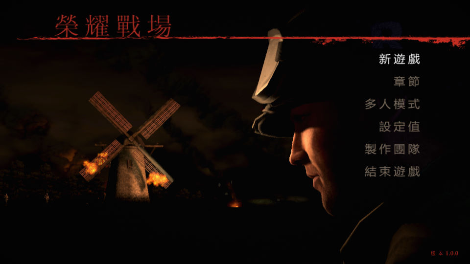
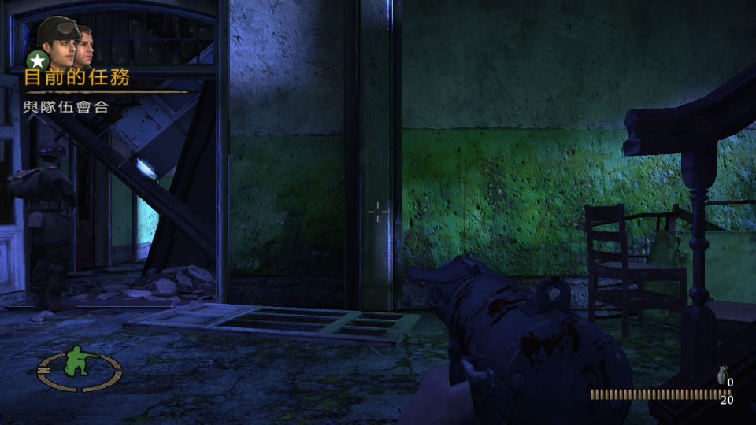

名稱：榮耀戰場3／戰火回憶錄3／兄弟連3／戰火兄弟連3／手足兄弟連3：地獄棧道／地獄血路／兵臨絕境
(Brothers in Arms: Hell's Highway，中文／英文版)
簡介：Gearbox 2008年出品的第一人稱射擊遊戲，由Ubisoft代理發行，2010年由英特衛中文
化並代理發行 [待補]。


保護：無
備註：VirtualBox無法執行，虛擬機請使用VMware。
備註：遊戲需要安裝PhysX（本版為8.04.25，有獨立安裝檔）
備註：遊戲需要d3dx9_36.dll、d3dx10_36.dll、xinput1_3.dll